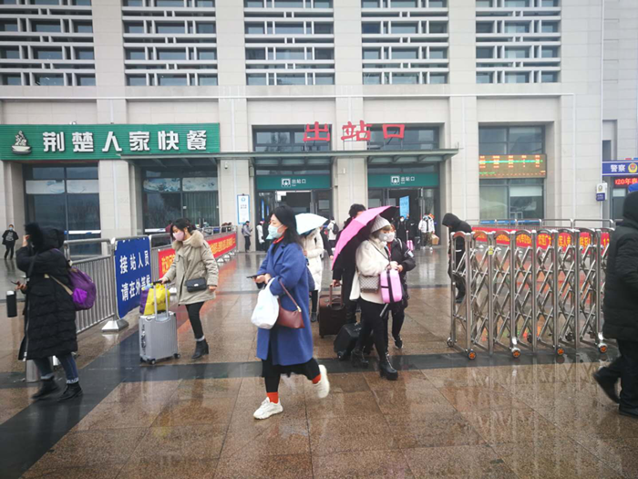
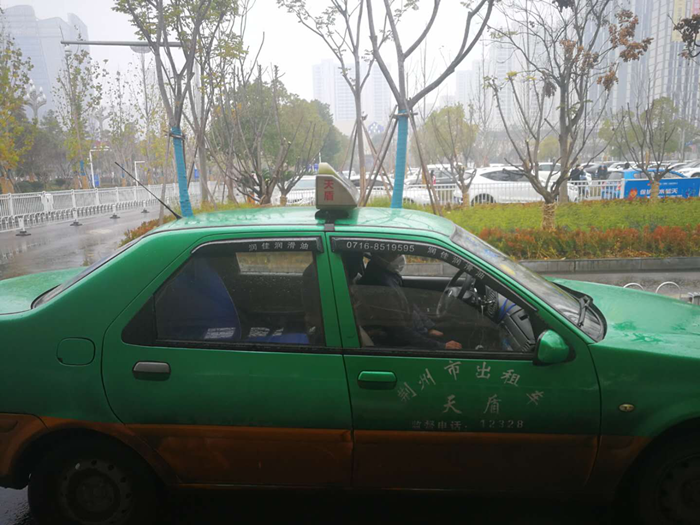
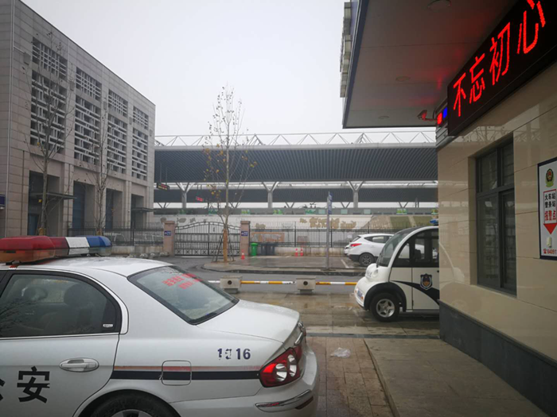

防疫升级后的武汉
原文链接 备份链接 1月23日上午10时20分，湖北武汉汉口火车站进站口，工作人员向旅客解释离汉通道暂时关闭的情况。中青报·中青网记者 王嘉兴/摄 中青报·中青网记者 王嘉兴 1月23日凌晨2时，武汉市疫情防控指挥部发布通告，自2020 …
荆州封城前的24小时
2020-01-24 21:39 作者：邹黄晶 石英婧 来源：中国经营网
特约撰稿 邹黄晶 本报记者 石英婧 荆州、上海报道
2020年1月24日，农历除夕，湖北省荆州市宣布，自中午12时起，暂时关闭荆州火车站离荆通道；24日17时前，暂时关闭市区所有公交车、道路客运班线车、旅游包车、农村客运车辆、渡口渡船。
荆州，地处新型冠状病毒感染的肺炎（以下简称“武汉肺炎”）暴发地——武汉西南方向，两地相隔约240公里。这也是继武汉、鄂州、仙桃、枝江、潜江、黄冈、赤壁、荆门、咸宁、黄石（含大冶市、阳新县）、当阳、恩施、孝感13个城市区域公共交通停运后，湖北省内第14个“封城”的城市。
《中国经营报》记者走访中了解到，随着武汉“封城”的消息像冲击波一样，逐渐对荆州产生辐射影响。口罩脱销、酒店团席取消、许多人连夜高价拼车赶回荆州…..而一些荆州籍贯打工族在回湖北前则会被要求提交体检报告，并在当地按时按要求汇报身体状况。
1月24日下午6时许，《中国经营报》记者致电荆州市疾控中心公众咨询电话进行采访，对方回复称：“荆州市疫情数据发布一切以国家卫健委官网为准。”
火车站停运前：口罩脱销、酒店取消团年酒席
口罩脱销了。
1月23日上午10:30左右，记者走访了位于荆州市沙市区的5家药店。其中3家，记者刚进店门便被告知：“口罩卖完了！”当记者问及多久能够补货时，店员均表示无法确定具体时间，其中一家店员告诉记者：“明天下午或后天早上可能来货，但肯定不会太多。”
另一家药店则对店内为数不多的简易包装N95型口罩实行限购，每人限购1只；位于江汉北路的百姓缘药店则拿出了仅剩的3箱口罩，其中N95型口罩每只售价19.8元，不算便宜的价格在半小时内被闻讯而来的市民买光。一次性医用口罩50只售价约49元，前来购买口罩的市民大多两盒起买。
位于江汉北路，易捷便利店旁的百姓缘药店，这是记者在江汉北路走访的5家药店中，还有库存且不限购的唯一一家药店。
此外，江汉北路上销售医疗器械的两家门店则早已关门。
1月23日凌晨，武汉封城的消息一出，这座距离疫情中心超过200公里的城市似乎刚刚反应过来，记者观察到，江汉北路附近的行人戴口罩与不戴口罩的人数各占一半，中老年人戴口罩的较少。
23日下午两点，记者来到荆州火车站，相比十天前，这里的人流稀疏不少，且约有三分之二的人戴上了口罩。不戴口罩的人也不一定是防疫意识不足，一名天天在火车站来回的李姓司机（下文称李师傅）向记者表示：“还没买到口罩。”
由于武汉上午10点封城，这个时间点从荆州下车的乘客大多来自外省，基本人人戴上了口罩，大多行色匆匆，部分人走向市内公交、出租站点，更多的人则朝着出站口左侧荆州客运站方向前行。

图为荆州火车站出站口

下车的乘客们走向客运站方向，从这里要么坐公交大巴，要么和老乡拼车回家。
记者向拉客拼车的司机询问从火车站到公安县（荆州市辖县）斗湖堤的价格，司机表示：“一口价每人五十。”
李师傅看上去生意不大好，没怎么拉到客人，他告诉记者：“从腊月二十七开始，火车站这边工作人员基本戴上了口罩。”不过记者注意到，火车站环卫工人并非人人都有口罩。
一位环卫工人告诉记者：“这两天火车站戴口罩的人比较多，我去药店买到了一点，先戴着。然后给我们队队长打电话，他给我们弄来了两盒口罩。”但另一位环卫工人则没那么幸运，在意识到需要买口罩的时候她已经买不到了。两位环卫工人向记者表示：“队里每人分到手是一人两只，先戴着再说。”

图为一直没买到口罩的环卫工人，她身后的一位同事手里拿着的就是单位分发的两盒口罩，人均两只。
在火车站出站口左侧与客运站交接处的一家便利店，记者注意到窗外贴着“KN95口罩有售”字样，当记者问及能否购买口罩时，店老板回复：“早卖光了。”记者获悉，这家店的此类口罩售价为50元一只。
23日晚上8点左右，一位在两湖农贸市场开蔬菜摊的老板告诉记者：“文湖酒店已取消了几桌团年酒席，明天另一家餐厅似水流年情况可能差不多。”
打工族返乡前被要求提交体检报告、按时上报身体状况
1月23日下午3时许，一位从福州返乡，刚刚出站的乘客告诉记者：“老家在仙桃，原计划到宜昌访友，过年从初一到初三拜年，如今也都取消，只打算回家和家人吃个年夜饭，初九初十返回位于福州的公司。”
值得注意的是，这位乘客告诉记者，自己是在福州的医院做了检查，向公司提交体检报告才被允许返回，在返回公司时，同样需要在医院做检查，确认没问题后，才能返回。
这位乘客还向记者表示：“听家里人说，这边口罩已经脱销，很难买到，还特意在福州当地备足了口罩带回家乡。”

1月23日下午3时许，荆州火车站出租车停靠站点，一名司机正戴着口罩。
另一位老家在监利县，从浙江嘉兴返乡的一对父子向记者表示：“还是有点小激动的。”他们向记者表示，浙江疫情防控已经到了乡村，他们父子离开嘉兴需向当地报备，同时回到嘉兴也必须向当地单位汇报，这对父子提到：“不仅是来回都要汇报，在湖北的身体情况也需按时上报”。
当记者问及二人家乡——监利县红城乡农村是否有类似应对措施时，他们表示：“暂时还未接到通知，但会主动去辖区登记。”对于过年期间是否要走亲访友，二人表示会综合老家监利县是否出现疫情、自身身体是否出现发烧咳嗽发力等考虑。
武汉封城当日加急拼车回荆州：一口价1500～1800元
23日下午，记者从主要往返火车站拉客的司机李师傅处得知：武汉封城当日，有武汉当地的司机赶在封城前将滞留武汉的人载回荆州，主要采取拼车的方式，按人头收费，“武汉—荆州”约240公里的路程一口价在1500～1800元。而从荆州到武汉的路程，由于客人不多，收费大概降了几百元，在1000元上下。
从荆州本地一位黄姓出租车司机处得知，平时从武汉包整车到荆州，价格在600～800元，他说：“这个价格还可以谈。”
记者联系到这位武汉当地司机，她表示：“从武汉带人出来要看地方，23日上午，我们出武汉除了要在高速检查体温，可以说一路畅通无阻。但现在不行，要等几天再看。”
在记者表示想要前往离武汉较近的孝感、咸宁，她说：“在武汉的几个区都有朋友，可以考虑过几天带人出城，留个联系方式。”

1月23日下午4点，返乡乘客乘动车回乡，由于武汉已封城，这趟列车大多数乘客来自省外。
部分农村区域仍未看到采取相关防疫通知、措施
1月23日晚，记者从一张姓出租车司机（张师傅）处了解到，出租车公司在腊月二十七，也就是1月21日，给司机们分发了防疫口罩，但到每个司机手中一般不超过3只，而现在这位张姓出租车司机戴的口罩为自行购买。
张师傅说：“家里的小区——长江三品的物业已给小区居民下发了通知，提醒了一些注意事项。”同时，该小区由物业组织已开始喷洒消毒水。不过，张师傅表示：“有点晚。”
记者发现，国家卫建委官方发布的数据显示，截至1月23日24时，国家卫生健康委收到29个省（区、市）累计报告新型冠状病毒感染的肺炎确诊病例830例，其中重症177例，死亡25例，其中湖北省24例。荆州市人民政府新闻办公室官方微博发布的最新数据则显示，1月23日0时～24时，荆州市新增确诊病例2例，合计共8例，无更详细官方数据。
另外，记者观察到在荆州农村地区，以关沮镇江河新村为例，并未看到采取相关防疫通知、措施。
1月24日下午6时许，记者致电荆州市疾控中心公众咨询电话进行采访，对方回复称：“荆州市疫情数据发布一切以国家卫健委官网为准。”
1月24日，农历大年三十，尽管荆州市新型冠状病毒感染的肺炎疫情防控指挥部发布的第二号通告表示要动员群众不组织群体性宴席、聚会等活动。动员群众戴口罩出行，动员自疫区返乡人员居家度假，减少外出。但在关沮镇下辖农村地区，记者发现，年味虽淡，家庭聚餐仍然不少见。
（编辑：石英婧 校对：彭玉凤）
原文链接 备份链接 1月23日上午10时20分，湖北武汉汉口火车站进站口，工作人员向旅客解释离汉通道暂时关闭的情况。中青报·中青网记者 王嘉兴/摄 中青报·中青网记者 王嘉兴 1月23日凌晨2时，武汉市疫情防控指挥部发布通告，自2020 …
原文链接 备份链接 关闭高速公路已是迫在眉睫，此前有因为自驾出游导致疑似感染的病例。截至1月23日下午14时，出武汉市的高速公路开始封闭 湖北省武汉市洪山区武鄂高速公路龚家岭收费站，已经堵车一个半小时 文 |《财经》记者 陈亮 李皙寅 王 …
原文链接 备份链接 不管是医生、护士、病患、疑似病患，还是星夜出城的情侣、着急的母亲、加班的创业者，没有人提到现在是春节，今天是除夕 文 |《财经》记者 房宫一柳 陈晶 编辑 | 宋玮 一些武汉人起床晚，他们可能比全国网民更晚知道武汉“封 …
原文链接 备份链接 这注定是一个难捱的春节。 截至1月23日24时， 全国确诊新型肺炎病例830例， 死亡25例。 截至1月23日晚，中国新型肺炎疫情地图（来源：丁香医生） 同时，国际确诊案例也陆续出现。 截至1月23日，数据如下： 泰 …
原文链接 备份链接 离汉通道关闭的前一天|图片报道 2020-01-23 07:22 作者：王迎春 来源：中国经营网 本报记者王迎春 武汉报道 1月22日，武汉首次披露肺炎疫情后第23天，湖北省、武汉市两级政府自21日起集中发布关于疫情防 …